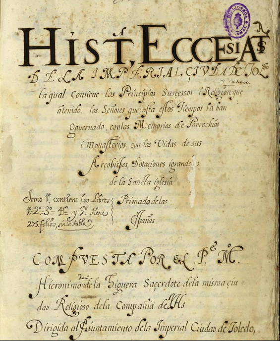

Inicio
Bienvenidos a la base de datos de Jerónimo Román de la Higuera.
En este sitio se publican ediciones digitales de textos manuscritos (en formato XML y HTML), como así también diversos estudios sobre la vida y la obra de este jesuita toledano.
El sitio y las ediciones han sido desarrollados por Miguel Betti, de la Universidad de Ginebra.
